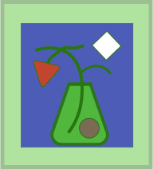
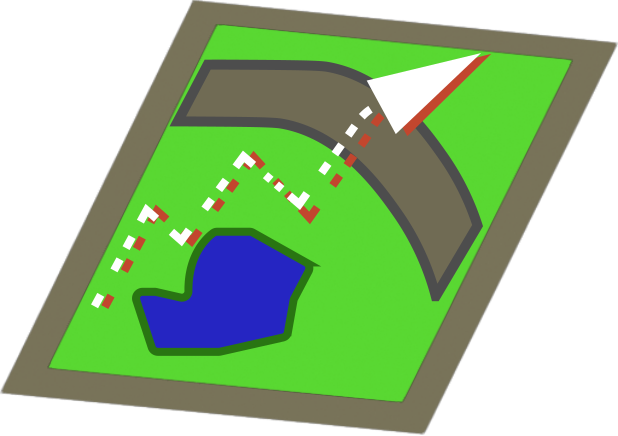
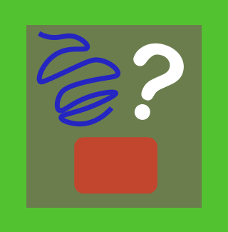

An Iterative Space for Experimentation
A Playground for Exploring Fundamental Possibilities Systematically

What is the scope of possibilities?
We live in a limited world with limitless possibilities.
The future is uncertain, but the present moment is full of occurrences which impact the future.
We cannot help but act and influence the environment around us.
Our world is not inseparable from ourselves.
Applying systematic thinking to simplified models of our world may help us see the interplay between actions we can control and their influence on the world that surrounds us.
Explorations Within a Confined System
The interactive demonstrations, games, and case studies in this section expand upon the topic of exploring different possible outcomes within a constrained systemic structure.